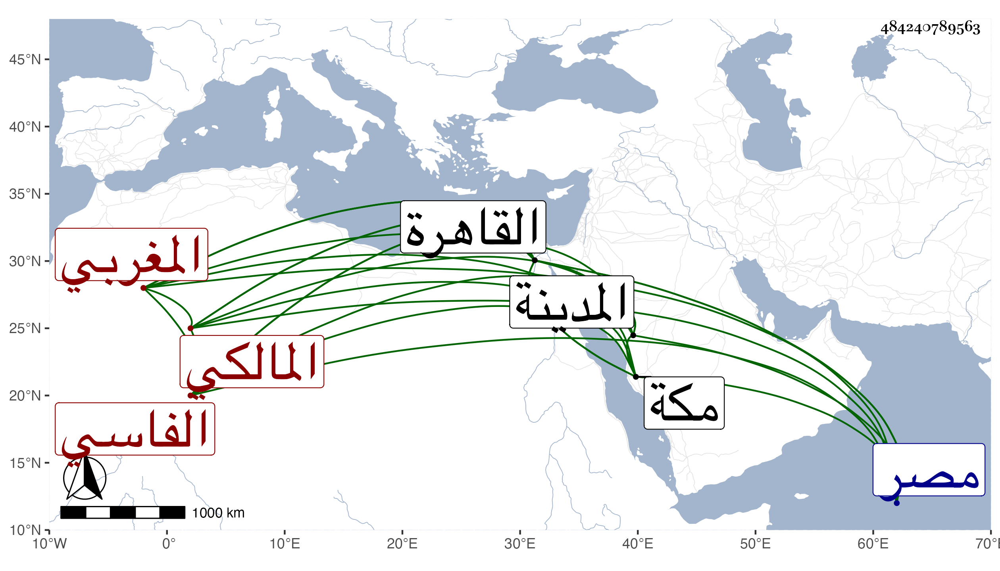

0902Sakhawi.DawLamic.ITO20230111-ara1.EIS1600.484240789563
Biography ID: 484240789563
أحمد بن أحمد بن محمد بن عيسى الشهاب البرنسي المغربي الفاسي المالكي ويعرف بزروق بفتح المعجمة ثم مهملة مشددة بعدها واو ثم قاف ولد في يوم الخميس ثامن عشري المحرم سنة ست وأربعين وثمانمائة ومات أبواه قبل تمام أسبوعه فنشأ يتيما وحفظ القرآن وكتبا وأخذ عن محمد بن القسم أحمد الغوري وارتحل إلى الديار المصرية فحج وجاور بالمدينة وأقام بالقاهرة نحو سنة مديما للاشتغال عند الجوجري وغيره في العربية والأصول وغيرهما وقرأ علي بلوغ المرام وبحث علي في الاصطلاح بقراءته ولازمني في أشياء وأفادني جماعة من أهل بلاده والغالب عليه التصوف والميل فيما يقال إلى ابن عربي ونحوه ، وقد تجرد وساح وورد القاهرة أيضا بعيد الثمانين ثم تكرر دخوله إليها ولقيني بمكة في سنة أربع وتسعين وصار له أتباع ومحبون وكتب على حكم ابن عطاء الله وعلى القرطبية في الفقه وعمل فصول السلمي أرجوزه .
